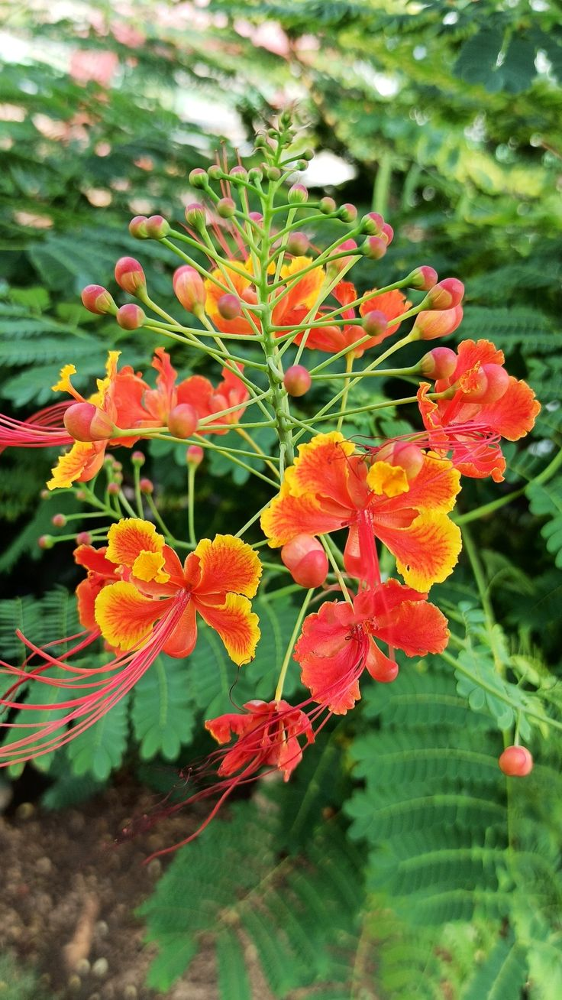

El bigotillo (Caesalpinia pulcherrima) es una especie de clavel con hojas alargadas y flores de color blanco. Es una atractiva planta ornamental, la favorita en jardines tropicales. En Barbados es reconocida por ser la "Flor Nacional" del país.
Tiene un aroma suave y fresco, generalmente ligero.
Necesita buena iluminación para crecer fuerte y producir más flores.
Se recomienda de 4 a 6 horas de sol directo o semidirecto al día.
Riego moderado, manteniendo la tierra ligeramente húmeda.
En temporadas frías se recomienda reducir la frecuencia de riego.
Evitar exceso de humedad para prevenir daños en raíces y hojas.
Retirar flores secas y ramas dañadas para estimular nuevas flores.
La poda ligera ayuda a conservar una forma más estética.
La flor Bigotillo destaca por sus pétalos llamativos y su apariencia exótica.
Es muy apreciada como planta ornamental por sus colores vibrantes.